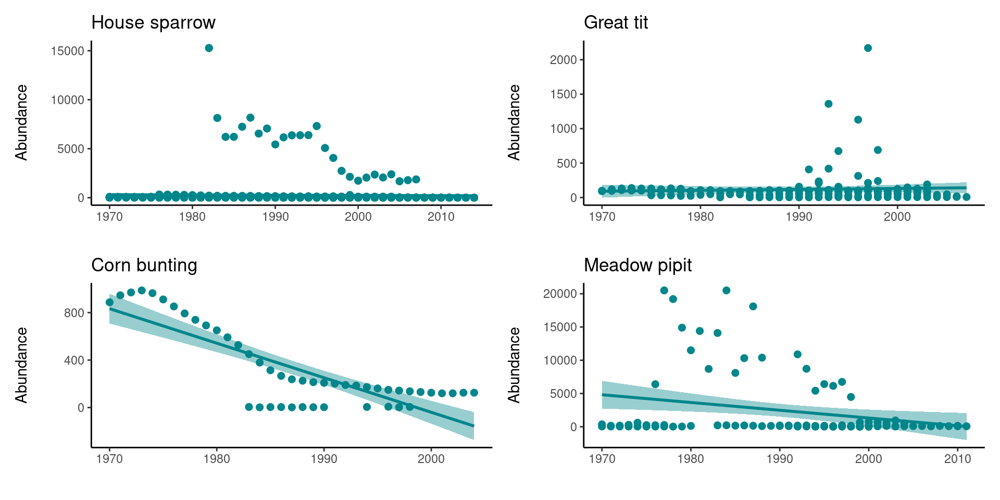
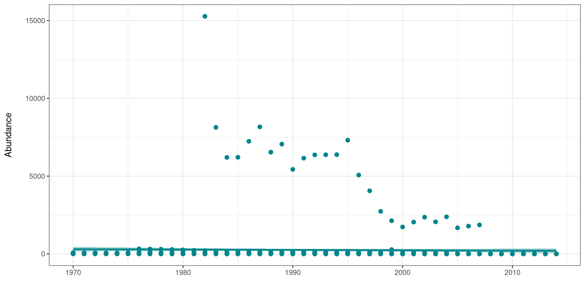
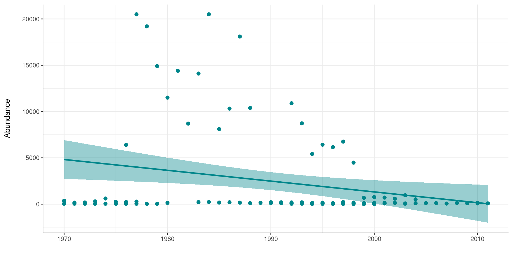
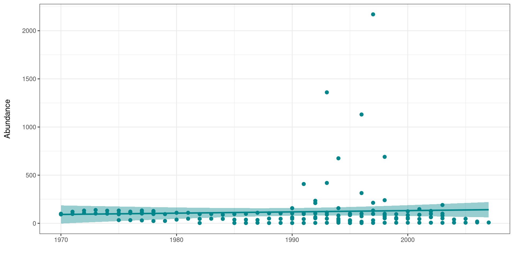
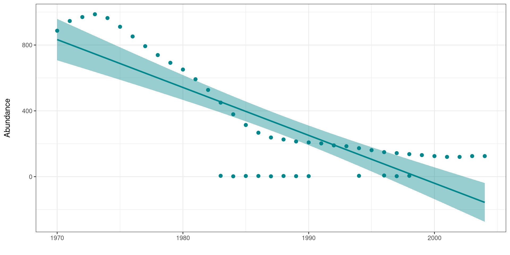

Chapter 41 Iteration
We’ve seen how to write a function and how they can be used to create concise re-usable operations that can be applied multiple times in a script without having to copy and paste, but where functions really come into their own is when combined with iteration. Iteration is the process of running the same operation on a group of objects, further minimising code replication.
41.1 Data structures
Functional programming in R requires a good understanding of the types of data structure available in R. Here we have a quick introduction
| Data type | Definition |
|---|---|
| Vector | Contains multiple elements of the same type of data logical, integer, double, character |
| Lists | Can contain elements of any type, each element can be a single value, a vector or even an entire dataframe |
| Matrix | A collection of elements of the same data type logical, integer, double, character arranged into rows and columns |
| Dataframe | A collection of vectors, each vector is a column, each row contains one set of values from each column. Data stored in a dataframe can be of any type of data |
| tibble | as dataframe, displays data types for each column alongside data |
41.1.3 Matrix
## [1] TRUE
## [,1] [,2]
## [1,] NA NA
## [2,] NA NA41.2 Simple iteration functions
41.2.1 rep()
The function rep() lets you repeat the first argument a set number of times.
## [1] 1 2 3 4 5 1 2 3 4 5 1 2 3 4 5 1 2 3 4 5 1 2 3 4 5
## [1] "Adelie" "Gentoo" "Chinstrap" "Adelie" "Gentoo" "Chinstrap"The default for the amount of repetition is times = it will print the entire vector start to finish THEN repeat.
If the second argument is a vector with the same number of elements as the first vector, then it will repeat to the specified values for each
## [1] "Adelie" "Adelie" "Gentoo" "Chinstrap" "Chinstrap" "Chinstrap"Or if you use the argument each then it will rep all of the first element first followed by the second etc.
## [1] "Adelie" "Adelie" "Adelie" "Gentoo" "Gentoo" "Gentoo"
## [7] "Chinstrap" "Chinstrap" "Chinstrap"What do you think will happen if you set both times to 3 and each to 2?
41.2.2 seq()
The function seq() is useful for generating a sequence of numbers with some pattern.
Use seq() to create a vector of the integers 0 to 10.
## [1] 1 2 3 4 5This is initially very similar to just making a vector with
## [1] 1 2 3 4 5But with seq we have extra functions. You can set the by argument to count by numbers other than 1 (the default). Use seq() to create a vector of the numbers 0 to 100 by 10s.
## [1] 0 10 20 30 40 50 60 70 80 90 100We also have the argument length.out, which is useful when you want to know how to many steps to divide something into
## [1] 0.000000 9.090909 18.181818 27.272727 36.363636 45.454545
## [7] 54.545455 63.636364 72.727273 81.818182 90.909091 100.00000041.2.3 replicate()
Replicate is our first example of a function whose purpose is to iterate other functions
For example the rnorm function generates numbers from a normal distribution.
Nesting this inside the replicate() function will repeat this command a specified number of times
## [,1] [,2] [,3]
## [1,] 1.2431513 2.18451380 2.2123819
## [2,] 1.5756564 0.25297244 1.1631301
## [3,] 0.8755848 1.01707686 0.5347344
## [4,] 2.4954751 -0.01397108 -0.1592592
## [5,] -0.4872208 1.32018052 0.7511214Here we will introduce two approaches to iterative operations - using for loops and using the package purrr.
for loops iterate code across a series of inputs, but are less common in R than in other programming languages. Nevertheless, we introduce them here as a learning tool and reference
The
purrrpackage is the tidyverse approach to iterative operations - it works by “mapping” a function across many inputs (values, columns, datasets, etc.)
41.3 For Loops
For loops are an essential part of many programming languages, but they are often less utilised in R because of our ability to apply functions to all elements of a vector. However, I will include them here for completeness.
A for loop has three core parts:
The sequence of items to iterate through
The operations to conduct per item in the sequence
The container for the results (optional)
The basic syntax is: for (item in sequence) {do operations using item}. Note the parentheses and the curly brackets. The results could be printed to console, or stored in a container R object.
for(i in list){
# PERFORM SOME ACTION
}A simple for loop example is below. For every number in the vector add 2. There is no container object here, the results of the function are printed directly into the console.
for (num in c(1,2,3,4,5)) { # the SEQUENCE is defined (numbers 1 to 5) and loop is opened with "{"
print(num + 2) # The OPERATIONS (add two to each sequence number and print)
} # The loop is closed with "}" ## [1] 3
## [1] 4
## [1] 5
## [1] 6
## [1] 7[1] 3
[1] 4
[1] 5
[1] 6
[1] 7So let's make a slightly more complicated function - first we are making a new tibble, first we have four vectors - made of 10 numbers each randomly generated to be roughly close to a 0 mean with a s.d. of 1. Then we combine them to make a tibble
set.seed(1234)
# a simple tibble
df <- tibble(
a = rnorm(10),
b = rnorm(10),
c = rnorm(10),
d = rnorm(10)
)
df| a | b | c | d |
|---|---|---|---|
| -1.2070657 | -0.4771927 | 0.1340882 | 1.1022975 |
| 0.2774292 | -0.9983864 | -0.4906859 | -0.4755931 |
| 1.0844412 | -0.7762539 | -0.4405479 | -0.7094400 |
| -2.3456977 | 0.0644588 | 0.4595894 | -0.5012581 |
| 0.4291247 | 0.9594941 | -0.6937202 | -1.6290935 |
| 0.5060559 | -0.1102855 | -1.4482049 | -1.1676193 |
| -0.5747400 | -0.5110095 | 0.5747557 | -2.1800396 |
| -0.5466319 | -0.9111954 | -1.0236557 | -1.3409932 |
| -0.5644520 | -0.8371717 | -0.0151383 | -0.2942939 |
| -0.8900378 | 2.4158352 | -0.9359486 | -0.4658975 |
Each vector is randomly generated so the actual averages will be slightly different, we can test that here:
## [1] -0.3831574
## [1] -0.1181707
## [1] -0.3879468
## [1] -0.7661931So the above code works, but it is repetitive, applying the same function again and again.
Below we have a simple for loop
output <- vector("double", ncol(df)) # 1. output having a predefined empty vector of the right size works best, here we choose to make the vector "double" specifying that it is empty and ready to receive number values, ncol(df) means that the vector will be as long as the number of columns in our tibble
output## [1] 0 0 0 0Now we run our loop:
for (i in seq_along(df)) { # 2. sequence - determines what to loop over - here we are looping along df, rather than down the length of each vector
output[[i]] <- mean(df[[i]]) # 3. body - each time the loop runs it allocates a value to output,
}
output## [1] -0.3831574 -0.1181707 -0.3879468 -0.7661931Each time the mean is calculate for one column in df this is then stored as an element in the previously empty output vector.
for() loops are very useful for quickly iterating over a list, but because R prefers to store everything as a new object with each loop iteration, loops can become quite slow if they are complex, or running many processes and many iterations. As an alternative the apply family of functions from base R and purrr::map from tidyverse more broadly can be used as an alternative to loops.
41.3.1 Activity 1: Loop exercise
We have made a function that converts values with a normal distribution into their z scores:
Assuming that each column in the dataframe df comes from a different population. How would you use a loop to apply this function to each column independently?
Hint copy your df to a new object z_df with z_df <- df as a destination tibble for your new z scores.
41.4 apply
We can perform exactly the same action with apply - the apply functions in R allow iteration without the use of loop constructs. They can be used for an input list or matrix.
MARGIN = 1 means apply function over rows
MARGIN = 2 means apply function over columns
## a b c d
## [1,] 0.3319492 0.15265375 0.7821670 1.0000000
## [2,] 0.7647291 0.00000000 0.4733256 0.5192783
## [3,] 1.0000000 0.06506096 0.4981101 0.4480343
## [4,] 0.0000000 0.31129943 0.9430704 0.5114592
## [5,] 0.8089534 0.57344857 0.3729606 0.1678518
## [6,] 0.8313814 0.26011813 0.0000000 0.3084450
## [7,] 0.5162933 0.14274906 1.0000000 0.0000000
## [8,] 0.5244878 0.02553760 0.2098653 0.2556247
## [9,] 0.5192926 0.04721860 0.7084006 0.5745131
## [10,] 0.4243735 1.00000000 0.2532211 0.5222322| Function | Arguments | Objective | Input | Output |
|---|---|---|---|---|
| apply | apply(X, MARGIN, FUN) | Apply a function to the rows, columns or both | Dataframe or matrix | vector, list or matrix |
| lapply | lapply(X,FUN) | Apply a function to all the elements of the input | List, vector or dataframe | list |
| sapply | sapply(X,FUN) | Apply a function to all the elements of the input | List, vector or dataframe | vector or matrix |
41.5 map
map is the tidyverse equivalent of apply it work well with %>% and there are a few extended functions to it works better with tibbles and dataframes
The basic syntax is map(.x = SEQUENCE, .f = FUNCTION, OTHER ARGUMENTS). In a bit more detail:
.x= are the inputs upon which the .f function will be iteratively applied - e.g. a vector of jurisdiction names, columns in a data frame, or a list of data frames.f= is the function to apply to each element of the .x input - it could be a function like print() that already exists, or a custom function that you define. The function is often written after a tilde ~ (details below). A few more notes on syntax:If the function needs no further arguments specified, it can be written with no parentheses and no tilde (e.g.
.f = mean). To provide arguments that will be the same value for each iteration, provide them withinmap()but outside the.f = argument, such as thena.rm = Tinmap(.x = my_list, .f = mean, na.rm=T).You can use
.x(or simply.) within the.f = functionas a placeholder for the.xvalue of that iterationUse tilde syntax (
~) to have greater control over the function - write the function as normal with parentheses, such as:map(.x = my_list, .f = ~mean(., na.rm = T)). Use this syntax particularly if the value of an argument will change each iteration, or if it is the value.xitself.
The output of usingmap() is a list - a list is an object class like a vector but whose elements can be of different classes. So, a list produced by map() could contain many data frames, or many vectors, many single values, or even many lists! There are alternative versions of map() explained below that produce other types of outputs (e.g. map_dfr() to produce a data frame, map_chr() to produce character vectors, and map_dbl() to produce numeric vectors).
Basic map() will always return a list, othr variants return different data types.Unlike apply map will ONLY return one type of data, removing the potential for changing data types that occasionally happens when using apply.
| Function | Data type returned |
|---|---|
map_lgl() |
returns a logical |
map_int() |
returns an integer vector |
map_dbl() |
returns a double vector |
map_chr() |
returns a character vector |
map_df() |
returns a data frame |
Thre different ways of applyig syntax the map function
| a | b | c | d |
|---|---|---|---|
| 0.3319492 | 0.1526538 | 0.7821670 | 1.0000000 |
| 0.7647291 | 0.0000000 | 0.4733256 | 0.5192783 |
| 1.0000000 | 0.0650610 | 0.4981101 | 0.4480343 |
| 0.0000000 | 0.3112994 | 0.9430704 | 0.5114592 |
| 0.8089534 | 0.5734486 | 0.3729606 | 0.1678518 |
| 0.8313814 | 0.2601181 | 0.0000000 | 0.3084450 |
| 0.5162933 | 0.1427491 | 1.0000000 | 0.0000000 |
| 0.5244878 | 0.0255376 | 0.2098653 | 0.2556247 |
| 0.5192926 | 0.0472186 | 0.7084006 | 0.5745131 |
| 0.4243735 | 1.0000000 | 0.2532211 | 0.5222322 |
| a | b | c | d |
|---|---|---|---|
| 0.3319492 | 0.1526538 | 0.7821670 | 1.0000000 |
| 0.7647291 | 0.0000000 | 0.4733256 | 0.5192783 |
| 1.0000000 | 0.0650610 | 0.4981101 | 0.4480343 |
| 0.0000000 | 0.3112994 | 0.9430704 | 0.5114592 |
| 0.8089534 | 0.5734486 | 0.3729606 | 0.1678518 |
| 0.8313814 | 0.2601181 | 0.0000000 | 0.3084450 |
| 0.5162933 | 0.1427491 | 1.0000000 | 0.0000000 |
| 0.5244878 | 0.0255376 | 0.2098653 | 0.2556247 |
| 0.5192926 | 0.0472186 | 0.7084006 | 0.5745131 |
| 0.4243735 | 1.0000000 | 0.2532211 | 0.5222322 |
| a | b | c | d |
|---|---|---|---|
| 0.3319492 | 0.1526538 | 0.7821670 | 1.0000000 |
| 0.7647291 | 0.0000000 | 0.4733256 | 0.5192783 |
| 1.0000000 | 0.0650610 | 0.4981101 | 0.4480343 |
| 0.0000000 | 0.3112994 | 0.9430704 | 0.5114592 |
| 0.8089534 | 0.5734486 | 0.3729606 | 0.1678518 |
| 0.8313814 | 0.2601181 | 0.0000000 | 0.3084450 |
| 0.5162933 | 0.1427491 | 1.0000000 | 0.0000000 |
| 0.5244878 | 0.0255376 | 0.2098653 | 0.2556247 |
| 0.5192926 | 0.0472186 | 0.7084006 | 0.5745131 |
| 0.4243735 | 1.0000000 | 0.2532211 | 0.5222322 |
41.6 Anonymous functions
In the previous chapter we were introduced to anonymous functions, if we do not plan to use a function outside of this particular iteration example, we might choose just to write it in directly
| a | b | c | d |
|---|---|---|---|
| 0.3319492 | 0.1526538 | 0.7821670 | 1.0000000 |
| 0.7647291 | 0.0000000 | 0.4733256 | 0.5192783 |
| 1.0000000 | 0.0650610 | 0.4981101 | 0.4480343 |
| 0.0000000 | 0.3112994 | 0.9430704 | 0.5114592 |
| 0.8089534 | 0.5734486 | 0.3729606 | 0.1678518 |
| 0.8313814 | 0.2601181 | 0.0000000 | 0.3084450 |
| 0.5162933 | 0.1427491 | 1.0000000 | 0.0000000 |
| 0.5244878 | 0.0255376 | 0.2098653 | 0.2556247 |
| 0.5192926 | 0.0472186 | 0.7084006 | 0.5745131 |
| 0.4243735 | 1.0000000 | 0.2532211 | 0.5222322 |
41.6.1 Exercise for For Loops
This part of the exercise is a real world example of using simple for() loops to create graphs. This data comes from the Living Planet Index, which holds data on various vertebrate species collected from 1974 to 2014.
First we should import the data:
Let's take a look at using functions and loops to help us build figures.
# Pick 4 species and make scatterplots with a simple regression model fits that show how the population has varied through time
# Careful with the spelling of the names, it needs to match the names of the species in the LPI.UK dataframe
house_sparrow <- filter(LPI_UK, Common.Name == "House sparrow")
great_tit <- filter(LPI_UK, Common.Name == "Great tit")
corn_bunting <- filter(LPI_UK, Common.Name == "Corn bunting")
meadow_pipit <- filter(LPI_UK, Common.Name == "Meadow pipit")So now we have four separate R objects holding data from four bird species, our standard approach might then be to make four figures looking at abundance over time.
house_sparrow_scatter <- ggplot(house_sparrow, aes (x = year, y = abundance)) +
geom_point(size = 2, colour = "#00868B") +
geom_smooth(method = lm, colour = "#00868B", fill = "#00868B") +
theme_classic() +
labs(y = "Abundance\n", x = "", title = "House sparrow")
great_tit_scatter <- ggplot(great_tit, aes (x = year, y = abundance)) +
geom_point(size = 2, colour = "#00868B") +
geom_smooth(method = lm, colour = "#00868B", fill = "#00868B") +
theme_classic() +
labs(y = "Abundance\n", x = "", title = "Great tit")
corn_bunting_scatter <- ggplot(corn_bunting, aes (x = year, y = abundance)) +
geom_point(size = 2, colour = "#00868B") +
geom_smooth(method = lm, colour = "#00868B", fill = "#00868B") +
theme_classic() +
labs(y = "Abundance\n", x = "", title = "Corn bunting")
meadow_pipit_scatter <- ggplot(meadow_pipit, aes (x = year, y = abundance)) +
geom_point(size = 2, colour = "#00868B") +
geom_smooth(method = lm, colour = "#00868B", fill = "#00868B") +
theme_classic() +
labs(y = "Abundance\n", x = "", title = "Meadow pipit")If we want to look at all four plots at once we can use the layout functions from the package patchwork.
# put at the top of your script
library(patchwork)
layout <- "AABB
CCDD"
house_sparrow_scatter+
great_tit_scatter+
corn_bunting_scatter+
meadow_pipit_scatter+
plot_layout(design=layout)
This is ok, but arguably still requires a lot of code repetition. We have used the same lines of code four times to recreate four plots that are functionally the same. If we want to make any changes to the look of our plots we have to make four separate edits & mistakes can easily creep in.
If we want to apply a loop, then the easiest thing is to first make our objects into an R list:
Then loop down the length of our list:
my_plots <- list(length(Sp_list))
for (i in 1:length(Sp_list)) {
# For every item along the length of Sp_list we want R to perform the following functions
data <- as.data.frame(Sp_list[i])
# Create a dataframe for each species
sp.name <- unique(data$Common.Name)
# Create an object that holds the species name, so that we can title each graph
plot <- ggplot(data, aes (x = year, y = abundance)) +
# Make the plots and add our customised theme
geom_point(size = 2, colour = "#00868B") +
geom_smooth(method = lm, colour = "#00868B", fill = "#00868B") +
theme_classic() +
labs(y = "Abundance\n", x = "", title = sp.name)
# makes a list of all the plots generates
my_plots[[i]] <- plot
}So now we have a new object my_plots which is a list containing the four plots. This loop allowed us to code the details of our figures once, then iterate across four different groups.
What if you want to write a loop to save all four plots at once - can you modify the script to do this?
41.7 Automating analyses with map
41.7.1 Writing a dataframe into multiple csv files
I’ll also use purrr::map() to take the character values from the Class column itself for assigning names to the list. map() transforms an input by applying a function to each element of the input, and then returns a vector the same length as the input. In this immediate example, the input is the list_of_dfs and we apply the function dplyr::pull() to extract the Class variable from each data frame. We then repeat this approach to convert Class into character type with as.character() and take out a single value with unique():
[1] "Actinopterygii" "Amphibia" "Aves" "Cephalaspidomorphi"
[5] "Cetacea" "Chondrichthyes" "Elasmobranchii" "Holocephali"
[9] "Mammalia" "Myxini" "Perciformes" "Reptilia"
[13] "Sarcopterygii" "Testudinidae" "updated by Nancy - Feb/02"
Exporting the list of data frames into multiple CSV files will take a few more lines of code, but is relatively straightforward. There are three main steps:
Define a function that tells R what the names for each CSV file should be, which I’ve called output_csv() below. The data argument will take in a data frame whilst the names argument will take in a character string that will form part of the file name for the individual CSV file.
Create a named list where the names match the arguments of the function you’ve just defined (data and names), and should contain the objects that you would like to pass through to the function for the respective arguments. In this case, list_of_dfs will provide the three data frames, and names(list_of_dfs) will provide the names of those three data frames. This is necessary for running pmap(), which in my view is basically a super-powered version of map() that lets you iterate over multiple inputs simultaneously.
map()will then iterate through the two sets of inputs through output_csv() (the inputs are used as arguments), which then writes the three CSV files with the file names you want. For the “writing” function, you could either use write_csv() from readr (part of tidyverse) or fwrite() from data.table, depending on your workflow / style.
41.7.2 Reading multiple csv files into one object
The method for reading CSV files into a directory is slightly different, as you’ll need to find a way to identify or create a character vector of names of all the files that you want to load into R. To do this, we’ll use list.files(), which produces a character vector of the names of files or directories in the named directory:
[1] "class-Actinopterygii.csv" "class-Amphibia.csv" "class-Aves.csv" "class-Cephalaspidomorphi.csv"
[5] "class-Cetacea.csv" "class-Chondrichthyes.csv" "class-Elasmobranchii.csv" "class-Holocephali.csv"
[9] "class-Mammalia.csv" "class-Myxini.csv" "class-Perciformes.csv" "class-Reptilia.csv"
[13] "class-Sarcopterygii.csv" "class-Testudinidae.csv"
The code below takes that list of files, pipes it to a map_df() function that runs read_csv on each file, then outputs everything to a 'nested' dataframe.
data <- files %>%
map(~read_csv(.)) %>% # read in all the files individually, using
# the function read_csv() from the readr package
reduce(rbind) # reduce with rbind into one dataframe
data41.7.3 Plotting with map
# map the plots to a dataframe
nested_plots <- LPI_UK %>%
filter(Common.Name == "House sparrow" |
Common.Name == "Great tit" |
Common.Name == "Corn bunting" |
Common.Name == "Meadow pipit" ) %>%
group_by(Common.Name) %>%
nest() %>%
mutate(plots = map(data, ~ ggplot(., aes (x = year, y = abundance)) +
geom_point(size = 2, colour = "#00868B") +
geom_smooth(method = lm, colour = "#00868B", fill = "#00868B") +
labs(y = "Abundance\n", x = "")))
# print the plots
print(nested_plots$plots)
## [[1]]
##
## [[2]]
##
## [[3]]
##
## [[4]]41.8 Activity 4: Test yourself
Question 1. Predict the output of the following when executed in R:
Question 2. Predict the output of the following when executed in R:
Question 3. Write a function that adds two numbers and divides the results by 2.
Question 4. Recode values of a datase. For example, if you have a survey of age data, you may want to convert any crazy values (like anything below 0 or above 100) to NA. Write a function called recode.integer() with 3 arguments: x, lb, and ub. We’ll assume that x is a numeric vector. The function should look at the values of x, convert any values below lb and above ub to NA, and then return the resulting vector. Here is the function in action:
Some hints: there are multiple ways to solve this.
41.9 Activity 5
If you are hungry for more map() then check out this blogpost
41.10 Summary
Making functions and iterations are advanced R skills, and can often seem daunting. I do not expect you to HAVE to implement these for this course, but I do want to give you an insight into some core programming skills that you might be interested in and want to develop.
Below are some links you may find useful
## R version 4.3.1 (2023-06-16)
## Platform: x86_64-pc-linux-gnu (64-bit)
## Running under: Ubuntu 20.04.6 LTS
##
## Matrix products: default
## BLAS: /usr/lib/x86_64-linux-gnu/atlas/libblas.so.3.10.3
## LAPACK: /usr/lib/x86_64-linux-gnu/atlas/liblapack.so.3.10.3; LAPACK version 3.9.0
##
## locale:
## [1] LC_CTYPE=C.UTF-8 LC_NUMERIC=C LC_TIME=C.UTF-8
## [4] LC_COLLATE=C.UTF-8 LC_MONETARY=C.UTF-8 LC_MESSAGES=C.UTF-8
## [7] LC_PAPER=C.UTF-8 LC_NAME=C LC_ADDRESS=C
## [10] LC_TELEPHONE=C LC_MEASUREMENT=C.UTF-8 LC_IDENTIFICATION=C
##
## time zone: UTC
## tzcode source: system (glibc)
##
## attached base packages:
## [1] stats graphics grDevices utils datasets methods base
##
## other attached packages:
## [1] here_1.0.1 patchwork_1.1.2 kableExtra_1.3.4 xml2_1.3.5
## [5] rvest_1.0.3 faux_1.2.1 extrafont_0.19 knitr_1.43
## [9] webexercises_1.1.0 glossary_1.0.0 lubridate_1.9.2 forcats_1.0.0
## [13] stringr_1.5.0 dplyr_1.1.2 purrr_1.0.1 readr_2.1.4
## [17] tidyr_1.3.0 tibble_3.2.1 ggplot2_3.4.2 tidyverse_2.0.0
##
## loaded via a namespace (and not attached):
## [1] gtable_0.3.3 xfun_0.39 bslib_0.5.0 tzdb_0.4.0
## [5] vctrs_0.6.3 tools_4.3.1 generics_0.1.3 fansi_1.0.4
## [9] pkgconfig_2.0.3 webshot_0.5.5 lifecycle_1.0.3 compiler_4.3.1
## [13] munsell_0.5.0 htmltools_0.5.5 sass_0.4.6 yaml_2.3.7
## [17] Rttf2pt1_1.3.12 pillar_1.9.0 jquerylib_0.1.4 extrafontdb_1.0
## [21] cachem_1.0.8 tidyselect_1.2.0 digest_0.6.33 stringi_1.7.12
## [25] bookdown_0.34 rprojroot_2.0.3 fastmap_1.1.1 grid_4.3.1
## [29] colorspace_2.1-0 cli_3.6.1 magrittr_2.0.3 utf8_1.2.3
## [33] withr_2.5.0 scales_1.2.1 timechange_0.2.0 rmarkdown_2.23
## [37] httr_1.4.6 hms_1.1.3 memoise_2.0.1 evaluate_0.21
## [41] viridisLite_0.4.2 rlang_1.1.1 downlit_0.4.3 glue_1.6.2
## [45] svglite_2.1.1 rstudioapi_0.15.0 jsonlite_1.8.7 R6_2.5.1
## [49] systemfonts_1.0.4 fs_1.6.2